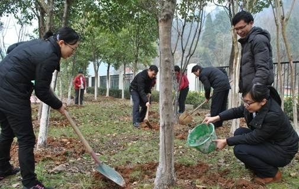
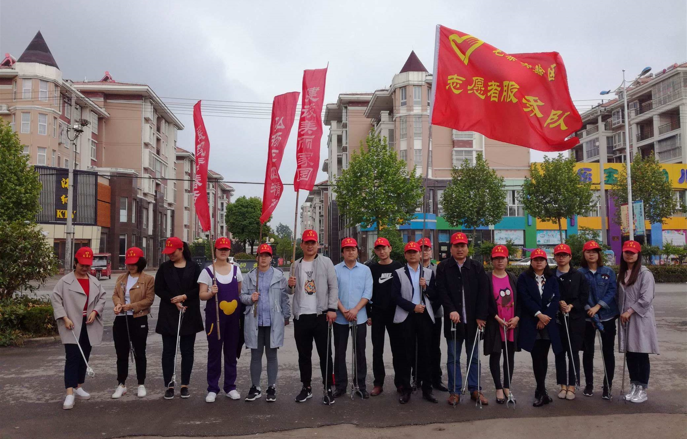

计划活动

3.12 植树节活动
中国植树节是以促进国土绿化，保护人类生态环境而设立的节日。与其它庆祝性质的节日不同，植树节需要各机关、单位高效地组织进行相关活动，方能更好地达到植树节设立的初衷。
3.08 妇女节活动
在中国，“三八”国际劳动妇女节前夕，中华全国妇女联合会展开“全国三八红旗手标兵”、”全国三八红旗集体“等评选活动，表彰中国妇女做出的业绩。
5.01 劳动节活动
中央人民政府政务院于1949年12月作出决定，将5月1日确定为劳动节。1989年后，国务院基本上每5年表彰一次全国劳动模范和先进工作者，每次表彰3000人左右。

5.04 青年节活动
青年节期间，中国各地都要举行丰富多彩的纪念活动，青年们还要集中进行各种社会志愿和社会实践活动，还有许多地方在青年节期间举行成人仪式。